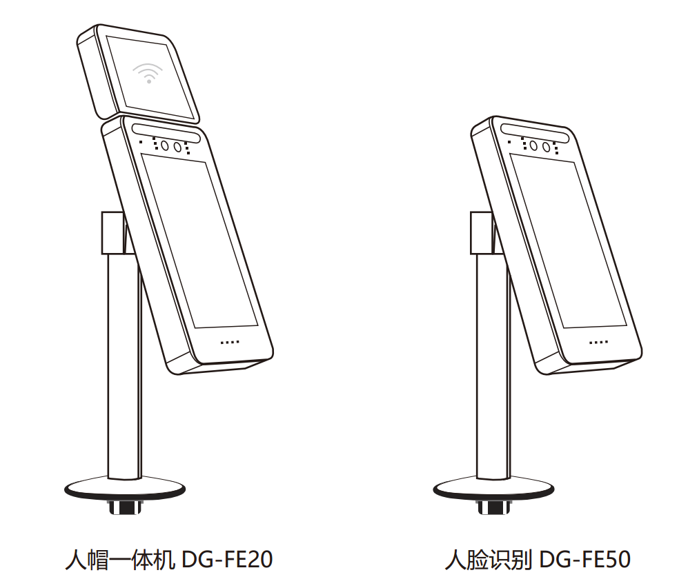
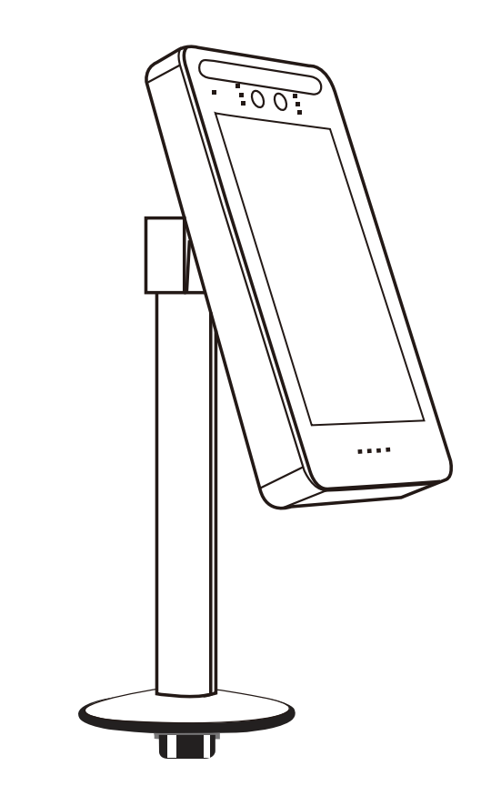
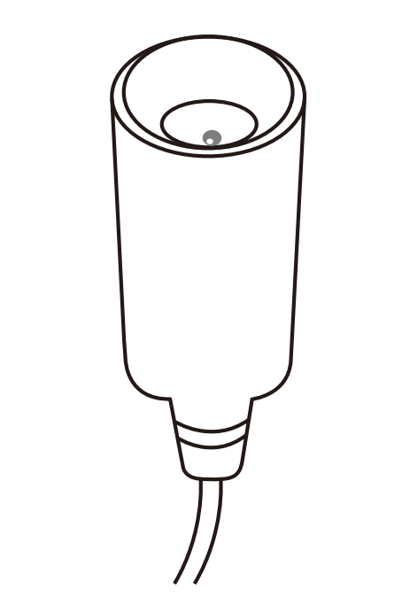
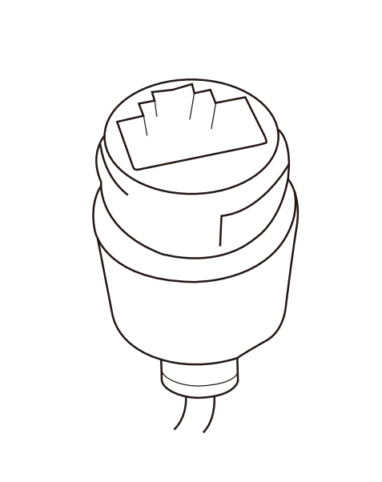
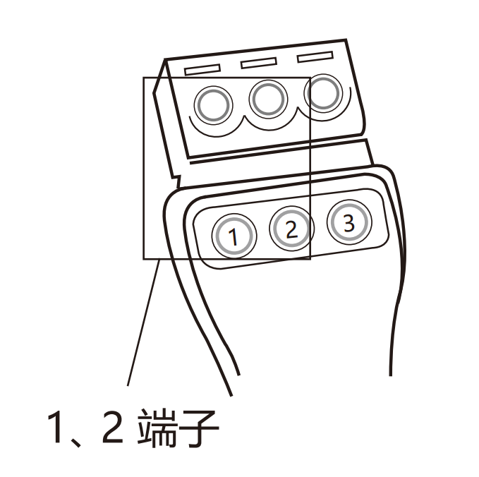
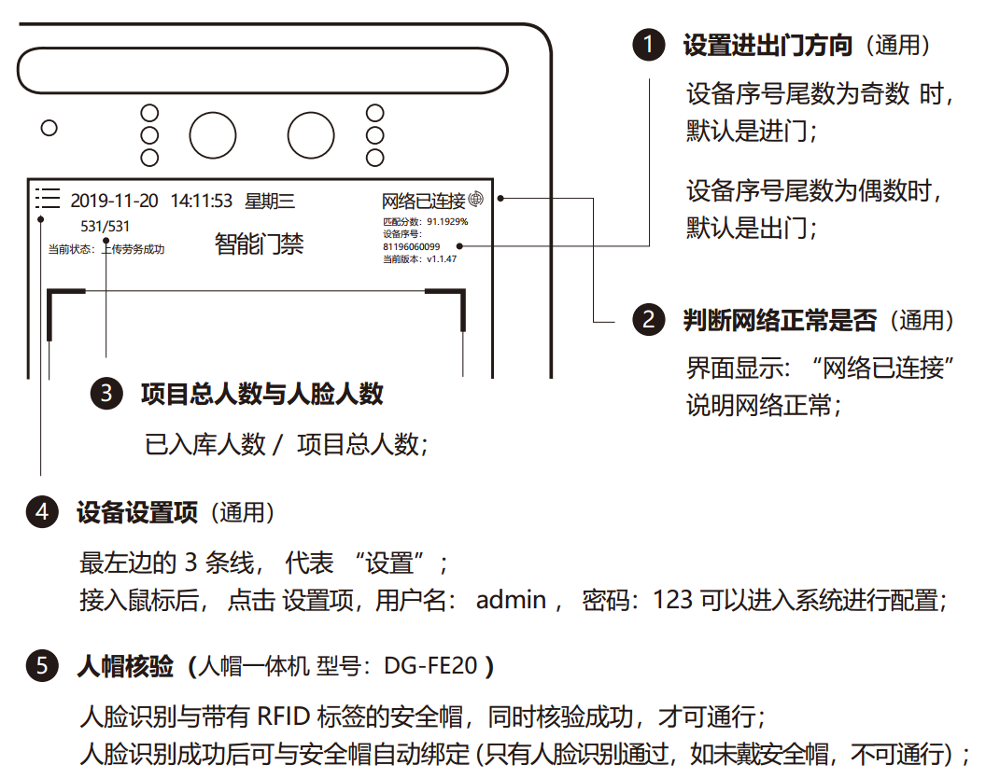
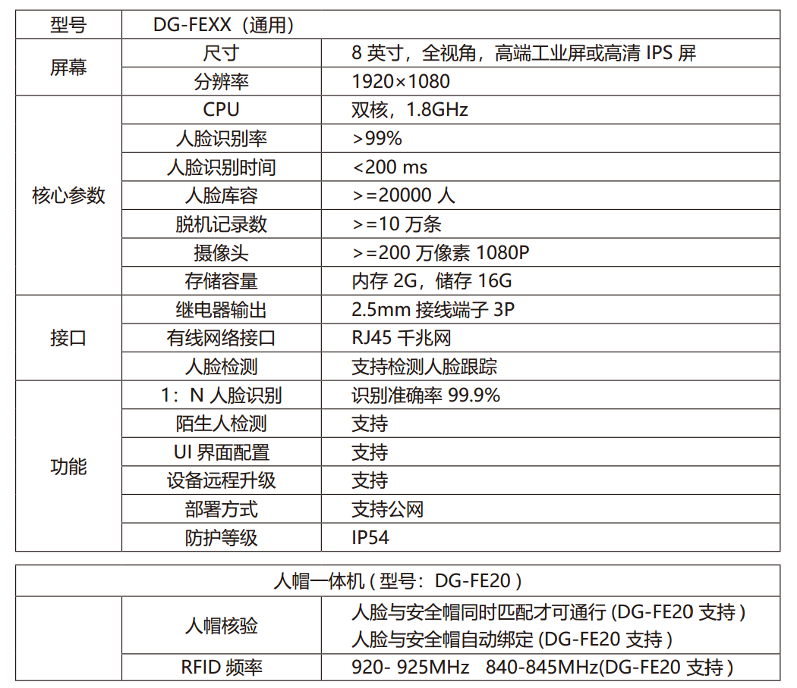

人脸识别闸机产品安装说明书

产品介绍
DG-FEXX 是弹弓科技自主研发的一代双目人脸识别门通行终端新品 , 集成现场人脸识别、身份验证、上传政府劳务平台等功能为一体；从人脸采集进行比对并获取结果，全程自动化，无需增加外围硬件资源，操作过程也无需人工干预。
产品功能
- 识别速度快，动态识别高量级存储、自动复位、逆光处理、防夹、安全稳定高效；
- 设备支持 1:N 人脸比对方式；
- 活体检测，有效防止照片、视频等欺骗性通过；
- 支持 I/O 口、韦根接口等识别联动，无感识别动态双摄防伪，彻底解决各类照片在各种载体上的欺骗；
- 支持公网、局域网使用部署方式；
- 支持韦根 26 输出，输出内容支持配置；
- 人脸库为 3000 时，误识率万分之三的条件下，1：N 识别准确率为 99.9%；
- 支持设备本地存储万人库
- 局域网设备支持同时存储 2 万张人脸照片；
- 照片按 100KB 计算、1 万条识别记录（含现场抓拍照片）；
- 夜间自动补光；
- 采用基于视频流的动态人脸检测、跟踪识别算法；
- 刷脸开闸后，自动上传考勤至政府劳务平台；
应用场景
建筑工地、智慧社区、工厂门禁、医院、酒店、学校、适用各种闸机（全高闸， 翼闸， 滚闸）
安装说明
1. 设备开孔，固定安装到闸机上

闸机固定方式以及开孔尺寸：闸机通过螺纹底座拧紧固定，闸机上的开孔尺寸为直径 30 MM 的圆形;
2. 连接12V 3A 电源线，网线，开闸信号线
电源12V DC 接口

电源：12V DC
电流：3A
请用标配的电源适配器，插入到 DC 接口
网线接口

网络： 连接网线， 上电后判断界面上 “ 网络已连接” 表示网络正常;
开闸信号接 1、 2 端子

开闸信号： 闸机的开闸信号接入到线束 “开门信号 1，2 ”的 两个接线口 ;
调试说明

默认情况下， 无需任何更改
-
人脸阈值：
修改人脸识别比对的阈值， 阈值设置越高， 误识别越低，通行时间慢
阈值越低，通行快，误识别越高；
默认阈值： 建议 88 分以上；
-
服务器设置：
子项包含
-
进出门方向设置，
-
是否上传到政府劳务平台；
-
-
设置开门时长
默认 1.2 秒，不同闸机开闸时间不同， 此处可以配置;
维护保养
- 搭建防雨棚，雨棚能更好的把雨水隔绝在外 , 或者在人脸识别门禁闸机固定位置周围打密封胶。防止雨水的渗透；
- 外部维护保养：大部分人脸识别门禁闸机是用国产不锈钢做成的，每周一次外表清洁，去掉锈斑点 , 要是外表喷涂，擦掉外表灰尘，用相同颜色油漆补一下；
- 机芯保养：机芯是机器的心脏，要保养好，一般每季度保养一次，打开上盖切断电源，清洁上面灰尘，将传动部分先清洁后加黄油或高浓度机油；
- 电路部分保养，根据以前的使用情况，看电控部分是否存在问题；
注意事项
- 人脸识别门禁闸机指示灯不亮的处理方法 :
- 检查电源
- 人脸识别门禁闸机不能开闸的处理方法 :
- 检查开闸信号是否正常
- 检查控制板
- 检查电磁铁螺丝是否松动或断裂
- 检查人脸识别门禁闸机驱动板 , 此时可短接驱动板输入端 (1# 开闸或 2# 开闸输入 ),若电磁阀或绿灯有反应即为正常
- 人脸识别门禁闸机手动不上杆 处理方法 :
- 检查断电落杆电磁铁是否吸合铁块
- 断电落杆的电磁铁是否有 12V DC 电源供应 ( 或 24V DC )
- 查看断电落杆的电磁装置是否顶到转盘内的弹簧片 , 如是 , 则将整个装置上移 , 使两者不发生接触
规格参数

服务保障
- 开箱通电验证：当收货时，请在签字前当场开箱通电检验机器，若发现闸机使用异常可以直接拒签，并第一时间拍照或录视频，联系我们处理 , 一旦签收即代表认可货物完好；
- 保留外包装：外包装（大架、包装纸箱、泡沫等）请至少保存 1 个月，以免退换货产生额外包装费用，另外物流公司可送货不包含上楼服务，偏远地区需要到物流点自提；
- 质保整年 > 维修服务：我们产品质保壹年，配件不在保修范围之内 , 保修期内 , 客户仅需承担寄回公司的运费，修好后寄出费由我们承担 ; 保修过期后，来回运费和设备的维修成本费即可；
- 一切人为损坏，自行拆机，拆封标，使用不当等一切外表的损坏，不在保修范围内，保修服务只限正常使用下有效。
- 售后邮箱：fae@dangongkeji.com。